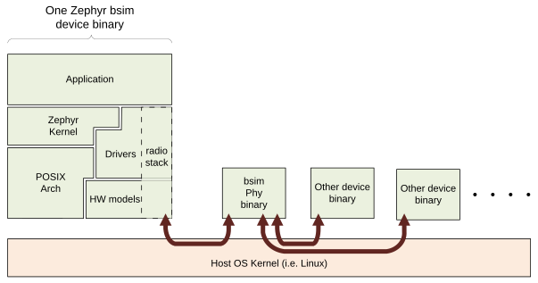

Bsim 开发板
Available bsim boards
本页介绍 nrf5x_bsim 开发板及其他类似 bsim 开发板的设计、架构和基本原理。这些开发板以 _bsim 作为后缀，因为它们使用 BabbleSim （简称 bsim）来模拟射频环境。这些开发板使用 native simulator 和 POSIX 架构 在 Linux 上原生构建和执行嵌入式代码。
有关 nRF52、nRF5340 和 nRF54l15 模拟开发板的具体细节（包括使用方法），请参阅各自的文档。
总体目标
这些 bsim 开发板的主要用途是作为在工作站/模拟环境中对嵌入式代码进行集成测试的测试平台。这里的集成测试是指，被测代码至少会像在其他任何 基于 POSIX 架构的开发板 上一样与 Zephyr RTOS 一起运行，此外还会包含一些在一定程度上模仿真实嵌入式硬件的硬件模型。
这些测试在工作站上运行，即不使用真实的嵌入式硬件。目的是能够以远快于实时的速度运行测试，无需真实硬件，并且以确定性/可重现的方式运行。
与 native_sim 不同，bsim 开发板不会直接与任何主机外设交互，其执行也与主机的负载或时序无关。
这些开发板还被设计用作原型设计和开发环境，有助于开发应用程序或通信协议栈。
不同类型的测试及其与 bsim 开发板的关系
在 POSIX 架构部分，我们对 POSIX 架构所提供的功能与其他方案进行了总体比较。该比较完全适用于这些开发板，本节将进一步阐述嵌入式软件开发者常用的各种测试方法之间的区别、优缺点，以及它们与这些开发板的关系。
单元测试：典型的单元测试框架提供的单元测试支持满足的是另一种需求，即单独测试某个组件。Zephyr 提供了一个单元测试目标（unit_testing），它与这些 bsim 开发板无关。
在真实硬件上进行集成测试：可以使用可能过于依赖具体硬件特性的真实软件组件进行测试，并且可能与最终方案相比无需任何改动。因此在某些情况下，它能比模拟提供更好的集成覆盖率，但代价是执行速度较慢、需要真实的硬件环境、测试通常不可重现，而且很多情况下故障不易调试。除此之外，它的用途与模拟集成测试非常相似。
在工作站上进行集成测试（POSIX 架构和这些开发板所支持的方式）
使用 bsim 开发板：可以测试嵌入式软件（或其子集），包括操作系统、外设模型等。通过将它们组合在一起测试，可以测试组件之间的交互及其集成。
将 bsim 开发板与 BabbleSim 物理层模拟结合使用，可以测试多个设备之间如何相互交互。例如，左右耳机如何通过射频链路同步并交换数据和音频，以及它们如何与手机交互。
将 bsim 开发板与 EDTT 框架结合使用：借助 EDTT 框架，可以在测试被测嵌入式代码的同时，通过外部 python 测试脚本控制测试。其实现方式是：使用一个处理 EDTT 通信（其 RPC 传输）的特殊驱动和一个处理 RPC 调用本身的嵌入式应用程序来编译嵌入式代码，而 python 测试脚本提供测试逻辑。
使用 Zephyr 的 native_sim 开发板：它同样支持嵌入式代码的集成测试，但不针对任何特定硬件。因此，许多依赖硬件的嵌入式组件不适合在该平台上测试。与 bsim 开发板一样，这个 Zephyr 目标开发板可以与 Zephyr 的 ztest 系统和 twister 一起使用，也可以单独使用。native_sim 开发板与 bsim 开发板共享 POSIX 架构 和原生模拟器运行器。
Zephyr 的 ztest 基础设施和 Zephyr 的 twister：基于与被测代码一起构建的专用嵌入式测试应用程序。嵌入式测试应用程序负责驱动测试并自行检查结果，然后将测试结果提供给指挥测试的 PC。它们最初被用作在目标上进行集成测试的框架，配合非常专用的测试应用程序使用，bsim 开发板完全支持它们。
设计
Zephyr、原生模拟器、nRF 硬件模型与 BabbleSim 之间的关系
如下图所示，当以 Zephyr 的某个 nrf_bsim 目标构建嵌入式应用程序时，使用的是 native simulator，它会与该目标的 nRF 硬件模型一起构建并由其扩展。应用程序首先与 Zephyr 内核以及所选的子系统和网络协议栈一起构建和链接，其中包括与真实目标基本相同的驱动。原生模拟器运行器与匹配目标的硬件模型一起构建。然后，嵌入式软件和运行器会链接在一起，生成一个 Linux 可执行文件。

以多 MCU SOC（例如 nrf5340bsim）为目标时，可以使用 sysbuild 构建可执行文件：先为每个 MCU 构建并链接其应用程序、Zephyr 内核和子系统，最后将它们与原生模拟器运行器一起组装成一个可执行文件。
分层：Zephyr 的架构层、SOC 层和开发板层
这些开发板的基本架构分层如下：
使用 native simulator 运行器在主机中执行代码。
Zephyr 的架构、SOC 和开发板组件被替换为模拟专用的组件。
架构（arch）是 Zephyr 的 POSIX 架构 层，SOC 层是
inf_clock，开发板层则取决于所模拟的具体设备。POSIX 架构提供从 Zephyr 架构 API（主要处理线程上下文切换）到原生模拟器 CPU 线程仿真的适配。参见 POSIX 架构的架构
SOC
inf_clock层提供到原生模拟器 CPU“模拟”的适配，并处理“CPU 模拟”（Zephyr 线程）与硬件模型线程之间的控制权交接（参见 Threading）。开发板层提供所有 SOC/IC 特定的内容，包括选择在原生模拟器运行器上下文中构建的硬件模型、IRQ 处理、忙等待 API（参见 posix_busy_wait）以及 Zephyr 的 printk 后端。注意，在普通的 Zephyr 目标中，中断处理和自定义忙等待由 SOC 层提供，但这里为了让
inf_clock层保持通用，变通地利用了 Zephyr 的分层，将它们委托给了开发板。开发板层还提供其他测试专用功能，例如 bs_tests 钩子、跟踪控制等，并借助原生模拟器提供 Linux 程序的main()入口点、命令行参数处理，以及模拟设备的整体时间调度。注意，POSIX 架构和inf_clocksoc 期望开发板提供一组 API，包括忙等待 API、基本跟踪 API、中断控制器和中断处理 API、posix_exit()和posix_get_hw_cycle()（参见posix_board_if.h和posix_soc_if.h）。

重要限制和不支持的功能
所有 native 和 bsim 开发板都具有一组相同的 重要限制，这些限制继承自 POSIX 架构和 inf_clock 的设计。
同样，它们也继承了 POSIX 架构的 不支持功能集。
CPU 与硬件模型的线程处理和整体调度
POSIX 架构的架构 和 native simulator design documentation 中介绍的线程处理说明以及通用 SOC 和开发板架构同样适用于 bsim 开发板。
此外，Architecture of HW models used for FW development and testing 对 babblesim 硬件模型及其调度做了总体介绍。
对于 nRF bsim 开发板，更多信息请参阅 nRF HW models design documentation。
时间与 time_machine
bsim 开发板中的模拟时间原则上与实际挂钟时间完全解耦。如 POSIX 架构的架构 中所述，模拟时间会按需推进到下一个已调度的硬件事件，并且在模拟 CPU 执行代码期间不会前进。
通常，模拟时间的流逝比实际时间快得多，模拟结果不会受到模拟主机负载的任何影响，也不会受到进程执行在调试器等工具中“暂停”的影响。
原生模拟器的硬件调度器提供硬件模型所需的整体硬件事件时间循环。该循环非常简单，由“查找下一个事件”、“将时间推进到下一个事件并执行它”组成，并配有一个 API，供使用它的组件通知其事件定时器已更新。为了简单和速度，事件在设计时定义，而不是动态注册。
babblesim 组件的使用：跟踪、随机数生成、日志记录活动
与硬件模型相同的注意事项同样适用于 bsim 开发板，参见 Architecture of HW models used for FW development and testing。
Zephyr 设备与其他模拟设备之间的通信通过 bsim libPhyCom 库处理。对于射频活动，下图展示了这种通信：

测试代码还可以使用 bsim 后向通道（backchannel）与其他设备的测试代码通信。后向通道在设备之间提供直接、可靠的管道，测试代码可以用它来交换数据。
关于使用 Zephyr API
注意，尽管 bsim 开发板的部分代码与 Zephyr 内核链接在一起，但一般不应从开发板代码本身调用 Zephyr API。特别是，不应从原始线程/硬件模型线程调用 Zephyr API，因为这样 Zephyr 代码会在错误的上下文中被调用，极有可能引发各种难以调试的问题。
一般来说，开发板代码应被视为比 Zephyr OS 更底层，并且不依赖于它。例如，开发板代码不应使用 printk API，因为那样无论如何都会回调到开发板代码（bsim 特定的 printk 后端），而后者依赖 bs_trace API。跟踪时应直接使用 bs_trace API。这同样适用于其他 Zephyr API，包括熵 API 等。
posix_print 和 nsi_print 后端
bsim 开发板为 posix 架构和 inf_clock 代码所需的 posix_print API，以及原生模拟器所需的 nsi_print API 提供了后端。
这些后端只是将这些 API 调用转发到 bsim 的 bs_trace API。通过这些 API 打印的任何消息（默认情况下也包括通过 Zephyr printk 打印的消息）都会与其他所有设备消息一起打印到控制台（stdout）。
bs_tests
bsim 开发板还提供 bs_tests 功能。
它允许定义（注册）测试，每个测试都可以使用一些仅在这些模拟目标中存在的特殊测试钩子。
这些测试与嵌入式软件一起构建，存在于二进制文件中，但默认不会执行。用户可以通过命令行查询存在哪些测试，并选择执行哪个测试（如果需要）。选中某个测试后，其注册的回调会被分配给相应的钩子。
其中有一组在硬件和 Zephyr OS 不同初始化级别执行一次的钩子、一个用于处理可能的命令行参数的钩子，以及一个可用于嗅探或捕获中断的钩子。bs_tests 还提供一个由嵌入式应用程序 main() 调用的钩子，但只有在主应用程序支持时才有效，即主应用程序是在 bsim 开发板中运行时会调用 bst_main() 的模拟版本。
除这些钩子外，bs_tests 系统还提供了构建专用测试“任务”的功能。该任务在硬件模型线程上下文中执行，但可以访问所有软件变量。它由一个特殊定时器驱动，该定时器可以配置为产生周期性或一次性节拍。节拍发生时，会调用已注册的测试节拍函数。这可用于支持测试逻辑，例如在特定时间点运行检查或执行操作。结合 Babblesim 的 tb_defs 宏，可以构建相当复杂的测试任务，例如等待给定的时间、等待条件满足等。
注意，使用 bs_tests 编写测试时需要意识到，其他 bs 测试很可能与同一个应用程序一起构建，因此测试不应使用 NATIVE_TASKS 或 Zephyr 的 PRE/POST 内核驱动初始化 API 注册初始化函数或回调函数，因为即使未选中该测试，它们也会执行。应改用 bs_tests 提供的等效钩子。
还要注意，对于 nrf5340bsim 等 AMP 目标，每个嵌入式 MCU 都有自己独立的 bs_tests，与该 MCU 一起构建。可以通过命令行选项分别为每个 MCU 选择是否使用测试以及使用哪个测试。
命令行参数解析
bsim 开发板需要处理命令行参数。参数分为以下几组：
基本参数：用于选择跟踪详细程度、随机种子、模拟设备编号和模拟 id（连接到 phy 时）等。这些参数尽可能遵循与其他 bsim 设备相同的约定，以方便开发者使用。
硬件模型命令行参数：硬件模型会公开需要处理的参数，而 bsim 开发板作为实际的集成程序确保这些参数得到处理。
测试（bs_tests）控制：用于为每个嵌入式 CPU 选择测试、打印可用的测试，以及向测试本身传递参数。
命令行参数解析使用 Babblesim 的 base/libUtilv1 库中的 bs_cmd_line 组件处理。符合预期约定的基本参数定义在 bs_cmd_line_typical.h 中提供。
其他注意事项
字节序：代码会为主机目标架构构建，通常是 x86。x86 是小端字节序，目标架构通常也是如此。如果不是这样，由于字节序缺陷，在一种架构上正常工作的嵌入式代码可能无法在另一种架构上工作。注意，Zephyr 的代码应编写为同时支持大端和小端字节序。
字长：bsim 目标与普通嵌入式目标一样都是 32 位目标。对于 bsim 目标，这是通过显式地以 x86（ILP32 ABI）而不是 x86_64 为目标实现的。这样做是为了在内存中提供更准确的结构体布局，从而更好地重现与访问结构体成员或数组溢出相关的潜在问题。